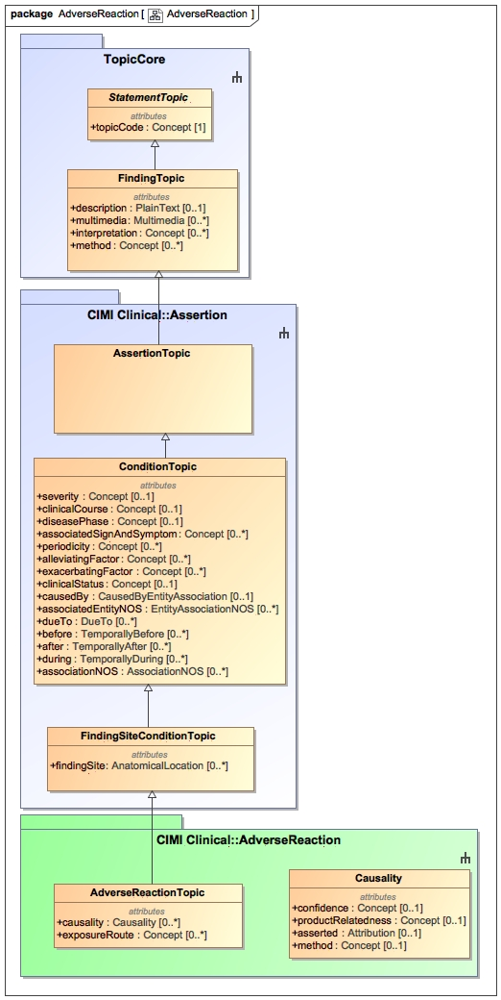

The AdverseReaction package contains classes pertaining to an unintended physical injury resulting from exposure to a substance. The two classes contained in this package are the AdverseReaction class representing an adverse reaction and the Causality class that expresses the level of confidence in the causality of the potential exposure to a suspected entity.
Please note that the adverse event classes are in active development by the HL7 Patient Care Working Group at this time.
